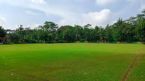

Kantin sekolah adalah ruangan atau bangunan di sekolah yang berfungsi untuk menyediakan makanan dan minuman bagi siswa dan staf sekolah. Selain sebagai tempat makan, kantin sekolah juga menjadi area untuk bersosialisasi dan bisa menjadi sarana belajar mendisiplinkan siswa serta menanamkan kebiasaan hidup sehat. Pengelolaan kantin harus memastikan makanan dan minuman yang dijual bersih, sehat, dan bergizi seimbang.

Ruang kelas adalah tempat di mana proses pembelajaran berlangsung. Ruangan ini biasanya dilengkapi dengan meja, kursi, papan tulis, dan peralatan pembelajaran lainnya. Ruang kelas yang nyaman dan kondusif sangat penting untuk mendukung efektivitas belajar siswa. Tata letak ruang kelas juga dapat mempengaruhi interaksi antara guru dan siswa serta antar siswa itu sendiri.

Lapangan sekolah adalah area terbuka yang biasanya digunakan untuk berbagai kegiatan fisik dan olahraga oleh siswa. Lapangan ini sering kali menjadi tempat untuk bermain sepak bola, voli, atau kegiatan ekstrakurikuler lainnya. Selain itu, lapangan sekolah juga dapat digunakan untuk acara-acara sekolah seperti upacara bendera, pentas seni, dan perayaan hari besar. Memiliki lapangan yang luas dan terawat dengan baik sangat penting untuk mendukung kesehatan fisik dan kesejahteraan siswa.